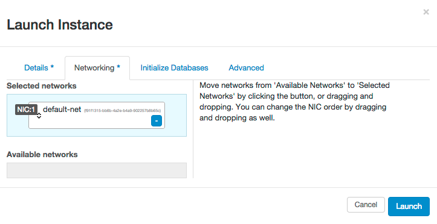

This topic describes how to create a database instance from the Horizon interface.
- Log into the Horizon console.
Under your project, open the Database panel and then click the Instances tab.
- Click Launch Instance.
- In the Details tab, specify the following options:
- Instance Name - the name of the instance to create
- Flavor - the size of the instance to host the database on. This is a minimum of m2.small for MySql, m3.medium for MongoDB and Redis,
and m4.large for Vertica Preview.
- Volume Size - the size of the volume to host the data on (in GB).
Note: Instances should have a minimum volume size of 5, and have a recommended size of 10.
- Datastore - The database architecture and version to use for the new instance.
Options are as follows:
- mongodb version 3.0
- redis version 3.0
- mysql version 5.5 (A single instance of MySql)
- vertica_preview version 7.1
Vertica Preview, MongoDB and Redis instances can be used for single-instance or clustered
databases; for a MySql database, using the single-instance version provides some
performance enhancements over the clustered version.
- Under the Networking tab, specify the network to associate the database instance with. This is required and should be the same network that any application that accesses the
database is on.

- Optional - Specify the initial database to create on the database instance. This option can be used to pre-populate the instance with a database, a user for that database, and an IP address of a single host allowed to
access the database (Leave this field blank to allow all hosts to access the database).
- Click Launch.
- In the Database tab, open the Instances panel. This panel displays the status of the newly created database instance.
- Once the database instance has reached Active status, the instance is ready to use.